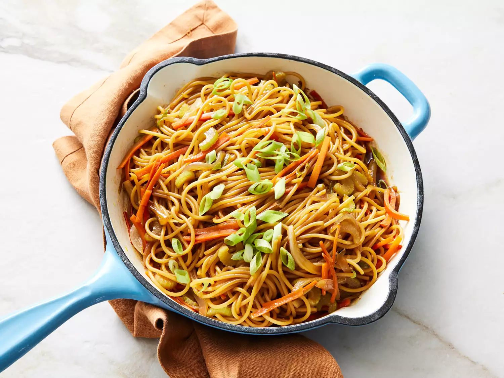

Home
Lo Mein Noodles

Description
These lo mein noddles were created from a blend of multiple recipes. Add your favorite meat for a main dish or serve as a side. If serving with meat, cook the meat separately.
Why you’ll love this recipe:Sweet and savory flavors comdine in this takeout‐inspired noodle dish, ready in just 30 minutes. Home cooks customizing these noodles with vegetables, chicken, shrimp, or beef. “Delicious! I added chili crisp oil for a bit of heat”‐Allrecipes member Marni.
Ingredients
- 1 (8 ounce) package spaghetti
- 3 tablespoons low‐sodium soy sauce
- 2 tablespoons teriyaki sauce
- 2 tablespoons honey
- 1/4 teaspoon ground ginger
- 2 tablespoons vegetable oil
- 3 stalks celery, sliced
- 2 large carrots, cut into large matchsticks
- 2 green onions, sliced, plus more for garnish
- 1/2 sweet onion, thinly sliced
Steps
- Gather all ingredients.
- Bring a large pot of lightly salted water to a boil. Cook spaghetti in boiling water, stirring occasionally, until tender yet firm to the bite, about 12 minutes; drain, the rinse with cold water to cool.
- Meanwhile, heat oil in a large skillet or wok over high heat. Add celery,carrots, green onions, and sweet onion; cook and stir until slightly tender, 5 to 7 minutes.
- Add spaghetti and soy sauce mixture to the skillet; cook, stirring frequently, until headted through and evenly coated, 2 to 3 minutes. Garnish l mein with green onions.